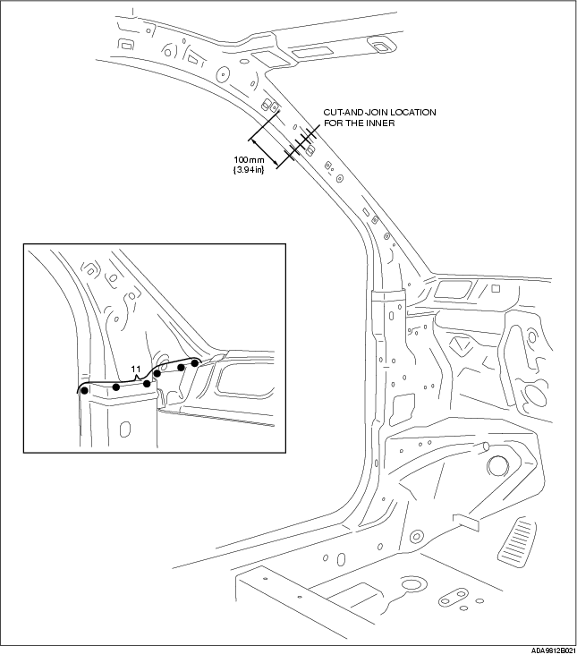
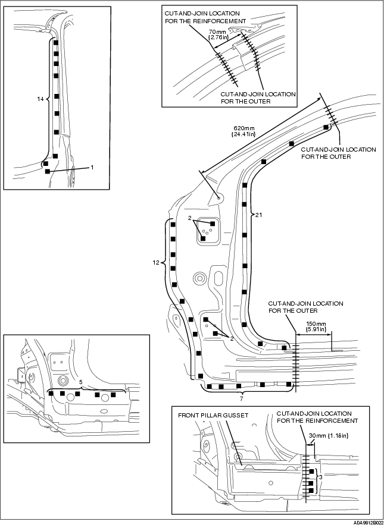

Front pillar installation
1. When joining the new and old parts, temporarily install and fit the new part in position, measure each dimension according to the body dimension, then adjust the position to align it to the standard dimensions.
2. Drill holes for plug welds before installing new parts.
- • In areas where the outer, reinforcement, inner, etc. are in 3-4 layers, drill holes for plug welds in all but the innermost panel.
3. After trial-fitting new parts, make sure the related parts fit properly.

